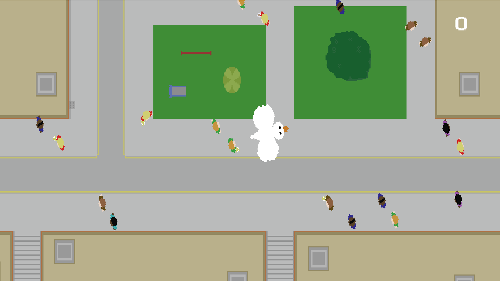

Projects

Bird Game
2022 - PC
Developed in less than a week, Bird Game is about a bird that loves to
steal food and poop on people.
It can be played by downloading through itch.io.
It can be played by downloading through itch.io.

Tabletop Adventure Journal
2021 - Chrome, Firefox
Tabletop Adventure Journal is a browser extension to make note taking and
sorting during tabletop games (like D&D) easier than trawling through a mammoth
document or pages of notes.
Install through the Chrome Web Store , or Firefox Add Ons.
Source code is also available through GitHub.
Install through the Chrome Web Store , or Firefox Add Ons.
Source code is also available through GitHub.